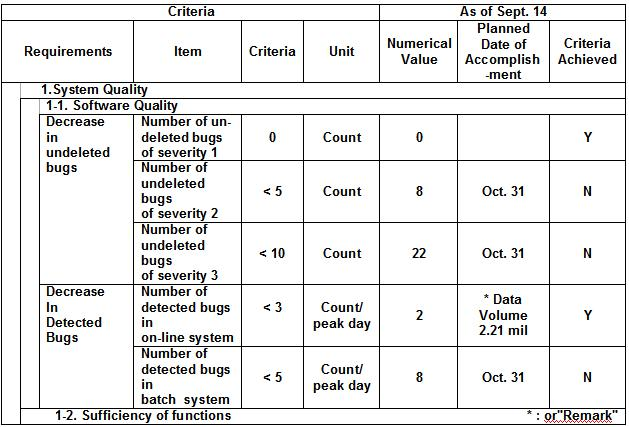

1 Description
A bad example was judgment whether the new system is ready for production or not was urged just before its cutover.
Cutover criteria must be defined, reviewed, and agreed upon with the client not just before cutover but before system
testing.
|
Objectives for determining cutover criteria are:
|
To manage un-attained items to take the most effective actions for the cutover.
To analyze the progress status of system tests from the viewpoint of operational feasibility.
To judge whether or not cutover is possible.
-
If all the items have been achieved, cutover is unconditionally possible.
-
If any item remains unaccomplished, there will be a corresponding risk. Therefore, the management of the user
departments must judge whether or not to accept cutover.
The major items of cutover criteria are as follows:
-
System quality
-
Capacity and performance
-
Operation
-
Migration and switchover
-
Maintenance and expansion after cutover
-
Achievement of contract (applicable to SI projects)
Agreement should be reached with the user departments about all items under these major items, except number 6, as
well as their criteria, before the beginning of system tests:
Break down the 6(5) major requirements to "medium items" and "minor items" according to the target system,
operation environment and project characteristics.
Considerations for setting up cutover criteria:
-
In principle, use quantitative values for criteria so as to enable objective judgment. For criteria that cannot be
expressed quantitatively, choose items that minimize subjective judgment and establish "Yes/No" criteria. (For Y/N
items, it is essential to provide management materials that back up their use.)
-
There must be reasons for the criteria for every item. It must be possible to explain "Why cutover is not possible
without reaching this value" or "Why this value is sufficient."
-
The cutover criteria should be thoroughly reviewed by a team that includes third parties, to make sure that no
items are missing, nothing is duplicated, and unnecessary items are eliminated.
-
During system testing, achievement status will be monitored regularly to manage un-attained items. For any
un-attained items, determine when they will be accomplished. If there are bottlenecks, identify them so that the
necessary action can be taken.
-
As the new system is operated by users, it is preferable that the cutover is judged by management of users. The
management of users should fully understand and accept the cutover criteria.
-
Management material is required for each item to back up the judgment of conditions. This is especially essential
for items with Y/N criteria. Choose appropriate items according to the type and environment of the system (such as
its public nature, impact of failure).
2 Examples
Example of Cutover Criteria
Following are cutover criteria examples:
2.1 System Quality
-
Software quality
-
Decrease in undeleted bugs
- Number of undeleted bugs of severity 1 (Count)
- Number of undeleted bugs of severity 2 (Count)
- Number of undeleted bugs of severity 3 and lower (Count)
-
Decrease in detected bugs
- Number of detected bugs in on-line system (Count/peak period)
- Number of detected bugs in batch system (Count/peak period
-
Sufficiency of functions
-
Target items in System Requirements Specification
- List all items. (Y/N)
-
Coverage of test cases
-
Items in External Specifications
- List major items. (Y/N)
-
Recovery procedures
- Number of verified CFIA elements (Count)
-
End user assessment
-
Assessment items relating to ease of use
- Number of poorly assessed items (Count/Total number of items)
-
Required promotion-
- End user management (Number/Total number)
- End users, operators (Number/Total number)
2.2 Capacity and Performance
-
Throughput (peak period)
-
On-line
- List a target transaction count for each system. (Count/sec)
-
Batch
- List a target job count for each critical path, as in "Processing count of Job XX.
(Count/min)".
-
Network
- Maximum trunk line traffic (Count/sec)
-
Workstation
- Maximum processing count (Count/hour)
-
Inter-system interface
- List a target transaction count for each interface. (Count/sec)
-
Turnaround time (peak period)
-
-
On-line
- Response time (sec/90 percentile)
-
Batch output
- End of balance specification table production (Time)
-
Allowable operating time zone (peak period)
-
Batch processing time zone
- Required time after on-line operations (min)
-
System recovery time
- Recovery when CPU fails (min)
- Recovery when Communication Control Unit #1 fails (min)
-
Capacity
-
Processor
- CPU utilization (%)
- Channel utilization (%)
- RS utilization (MB)
- ES utilization (MB), paging count (Count/sec), etc.
-
DASD
- Filling ratio (%)
- Maximum actuator utilization (%)
-
CCU
- Required memory (KB)
- Utilization (%)
-
Network
- Maximum trunk line utilization (%)
-
Workstation
- Maximum utilization (%)
-
NCU
- Maximum telephone line utilization (Erlang)
-
Space
- Surplus space (m 2 )
-
Power
- Surplus CFCF (KVA), etc.
-
Air conditioning
- Surplus (KCal/hr)
-
Battery
- Duration (min)
-
Private generation
- Duration (days)
2.3 Operation
-
System configuration
-
-
Center hardware configuration
- Has the hardware installation needed for cutover been completed? (Y/N)
-
Disk allocation
- Maximum access count (Count/sec)
- Path duplication to all actuators (Y/N)
-
Software configuration
- Have all required PTFs been applied? (Y/N)
-
Network
- Has an opening test been given to all communication lines to be used for system operation?
(Y/N)
-
Terminal configuration
- Have arrangements been made to move/install all terminals to be used for system operation?
-
Various facilities
- Has installation been completed? (Y/N)
-
Operating organization
-
-
Operating organization
- Has an organization been established? (Y/N),
- Has a help desk been established? (Y/N), etc.
-
Division of authority and responsibility
- Is this stated explicitly in manuals? (Y/N)
-
Special organization immediately after cutover
- Has a standby organization been established?
- Has a communication organization been established? (Y/N)
-
Center operations
-
-
Organization
- Have an organization and a working system been established? (Y/N)
- Has operation training been completed? (Y/N)
-
Operating procedures
- Have the procedures, including recovery procedures, been verified? (Y/N), etc.
-
Operation manuals
- Has each type of verified manual been completed?
-
I/O forms
- Volume on hand (for [ ] days), etc.
-
End user operations
-
-
Organization
- Have an organization and a working rule been established? (Y/N)
- Has operation training been completed? (Y/N)
-
Manuals
- Have verified manuals been completed? (Y/N), etc.
-
Training about new application system
- Training coverage (%), etc.
-
Security
-
-
Security functions
- Number of unsatisfied requirements (Count/Total number)
-
Preventive control functions
- Number of unsatisfied requirements (Count/Total number)
-
Trouble indication functions
- Number of unsatisfied requirements (Count/Total number)
-
Audit trail holding functions
- Number of unsatisfied requirements (Count/Total number)
-
Evaluation of operating department
-
-
Acceptance test
- Number of items assessed poorly (Count/Total number of items)
2.4 Migration and Switchover
-
Verification of migration system
-
-
Quality of migration system
- Number of detected bugs in migration program (Count/rehearsal)
- Have the migration procedures been verified?
- Have the manuals been verified? (Y/N)
-
Quality of switchover file
- Has defective data been fixed completely? (Y/N)
-
File switchover rehearsal
- Required switchover time (hour)
- Number of remaining troubles (Count)
-
Fall back plan
-
-
Method
- Have the procedures been verified? (Y/N)
-
Judgment timing
- Is this stated in the migration manual? (Y/N)
-
Communication to users
- Has a fallback work structure been established? (Y/N)
-
Structure for migration
-
-
Plan
- Has the plan been reviewed? (Y/N)
-
Schedule
- Has the schedule been confirmed by the operating and user departments and makers? (Y/N)
-
Organization
- Have an organization and working rules been established? (Y/N)
- Has the migration training been completed? (Y/N)
-
Communication structure
- Is this stated in the migration manual? (Y/N)
-
Recovery procedures
- Have the procedures been verified? (Y/N)
2.5 Maintenance and Expansion After Cutover
-
Regression test environment
-
Development and maintenance standards
- Are standards manuals available? (Y/N)
-
Test data
- Have test databases been developed? (Y/N)
- Have test transactions been developed? (Y/N)
- Has a regression test manual been completed?
-
Test tools
- Are all the necessary tools available? (Y/N)
- Have the libraries been defined? (Y/N)
-
Test Resources
- Are all the necessary resources available? (Y/N)
-
Documents and libraries
-
Documents
- Have the External Specifications been updated? (Count/Number of subsystems)
- Have the Internal Specifications been updated? (Count/Number of subsystems)
-
Files
- Have the library management procedures been defined? (Y/N)
- Is the storage space available? (Y/N)
-
Change control
- Have the procedures been defined and described in the form of a manual? (Y/N)
2.6 Contract Achievement (Applicable to SI Contracts)
-
Achievement of items in contract
-
Number of items that may present a problem (Count/Total number)
-
Customer assessment of SI
-
Payments
-
Number of pending items (Count)
2.7 Criteria Management Table
A format similar to that shown in the following table is desirable for criteria management. If a different format is
used, the enumerated items in the table should still be used.

Management materials that back up each of the items in the above table are necessary. When the criteria are Y/N, such
materials are necessary for each item.
|